Taiwanese Opera Puppet Theatre · 人偶共演
《閻羅石磨心》
The Contradiction of the Yama
About the work
作品介紹
作品以新型態人偶合演為主軸，從經典彩樓延伸舞臺空間，並把歌仔戲曲調融入布袋戲表演。故事核心聚焦人性情感的掙扎、衝突與判斷。
豬屎伯因誤入蛇郎君宅邸而捲入悲劇，最終一家冤死。來到地府後，面對閻王一次次審問，每個冤魂卻說出不同版本的故事。當每個人都有執著與理由，一桿秤究竟如何衡量是非？
Production stills
演出劇照
人偶共演、地府場景與戲台演出畫面。
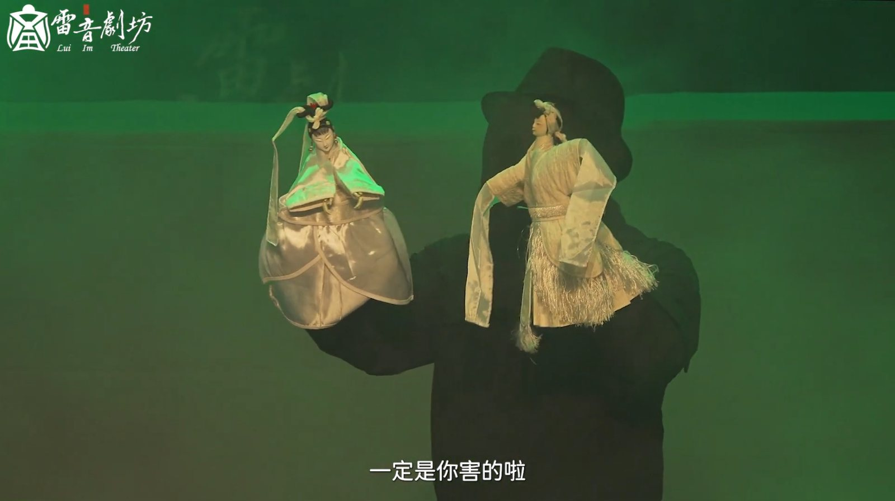
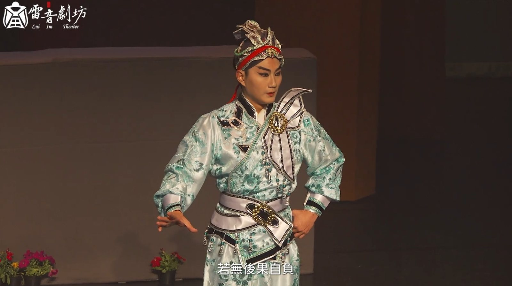
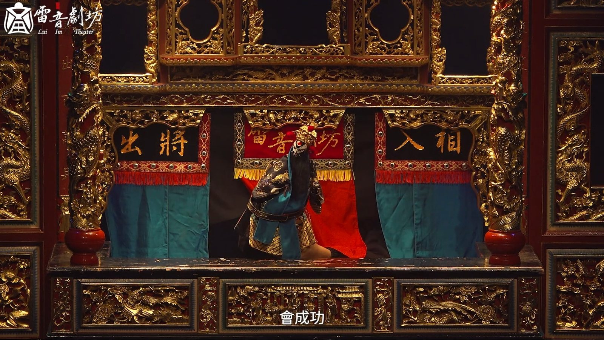
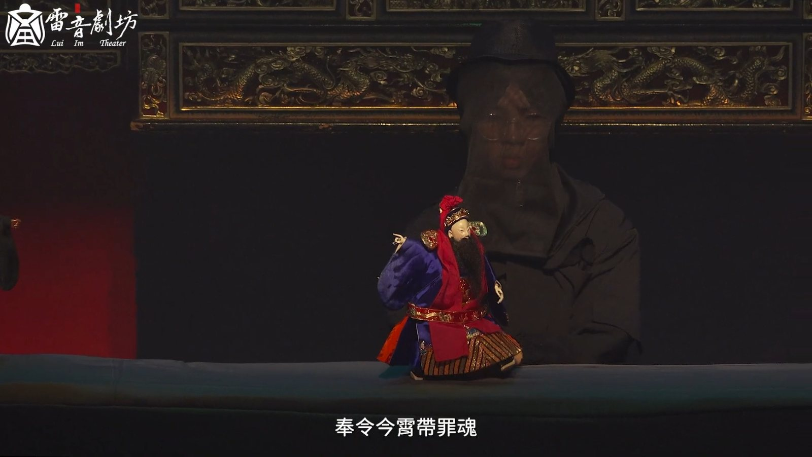
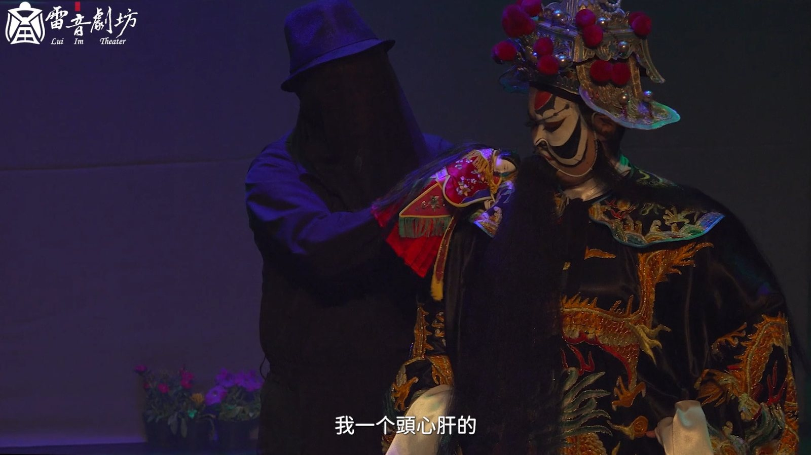

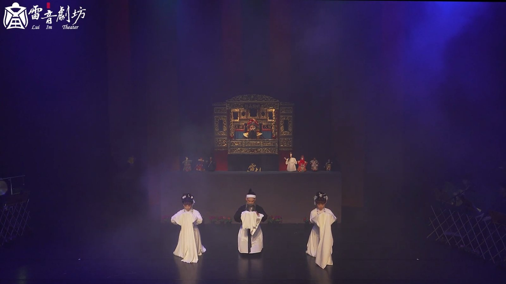
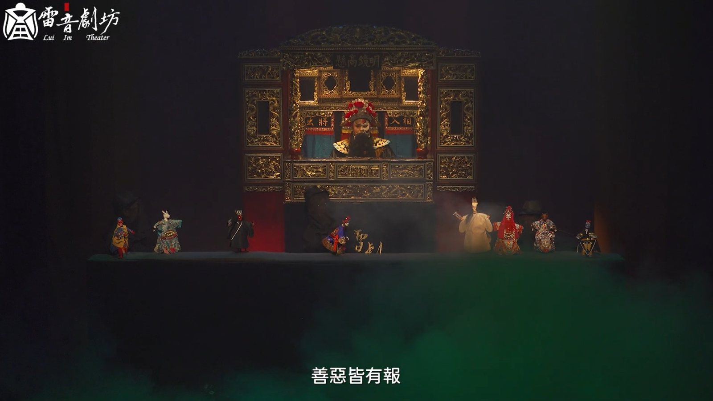
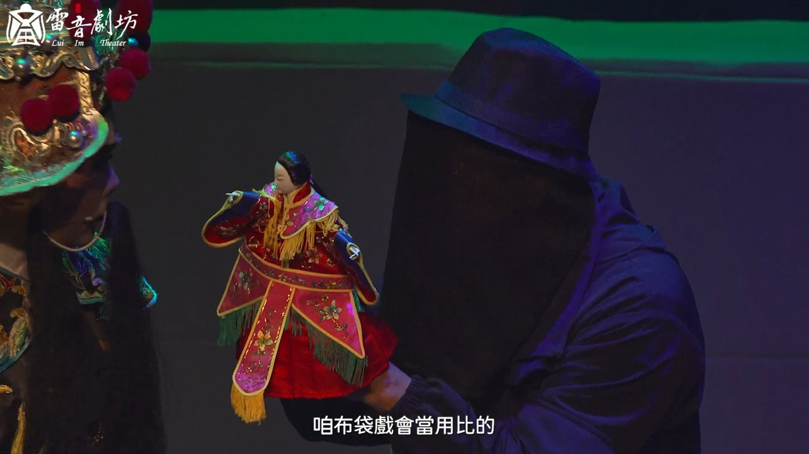
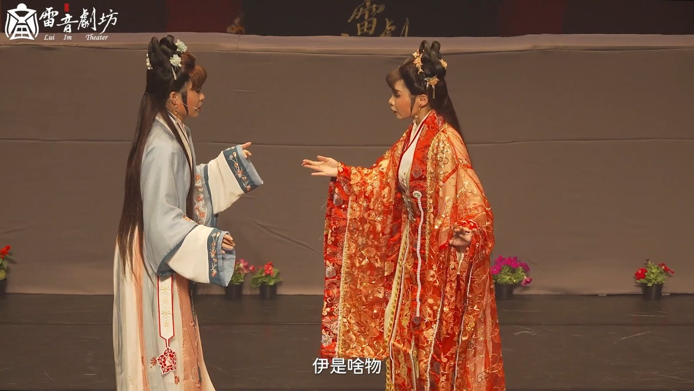
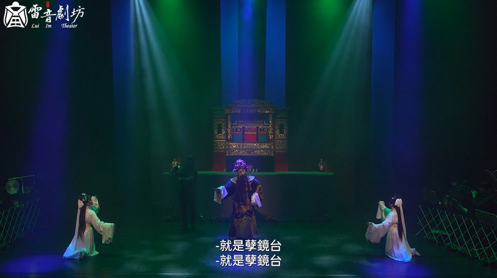
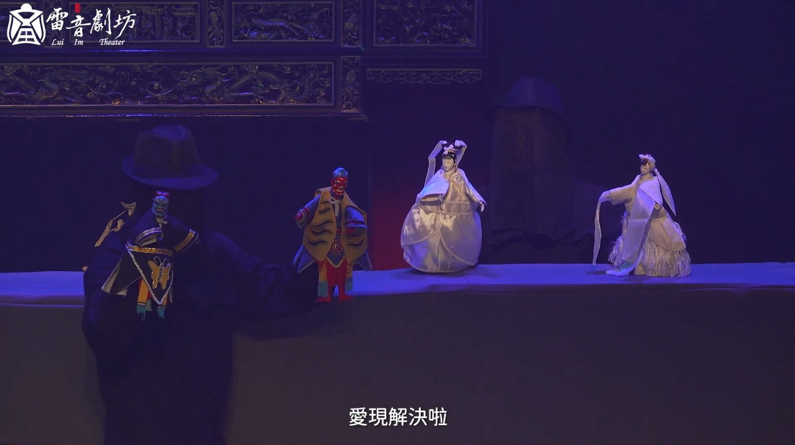
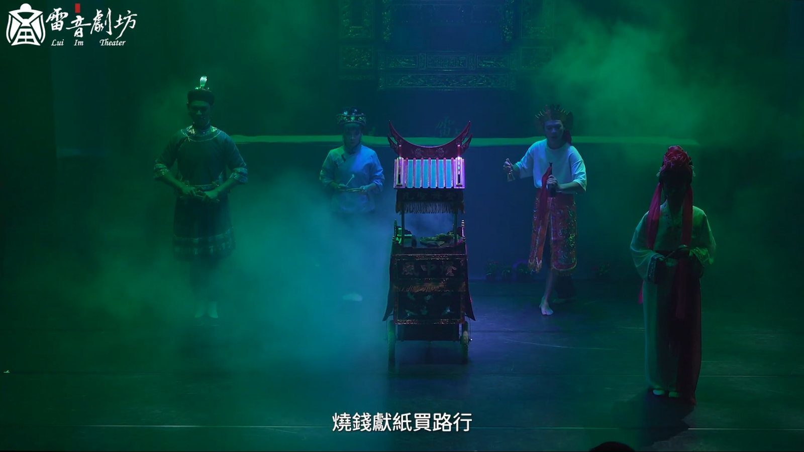
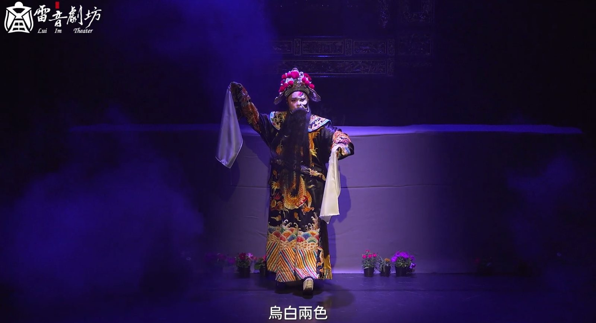